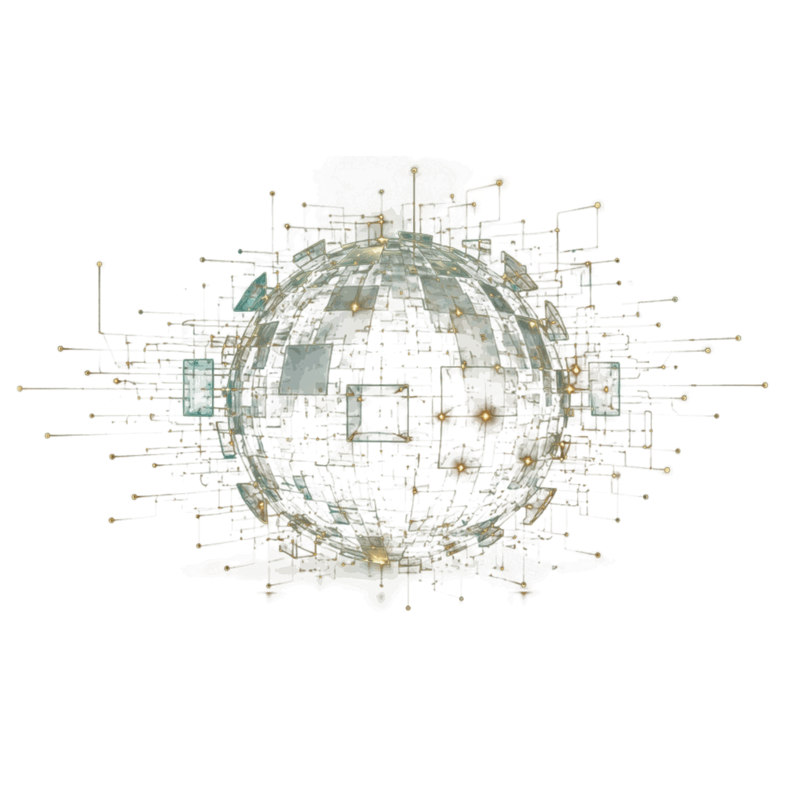
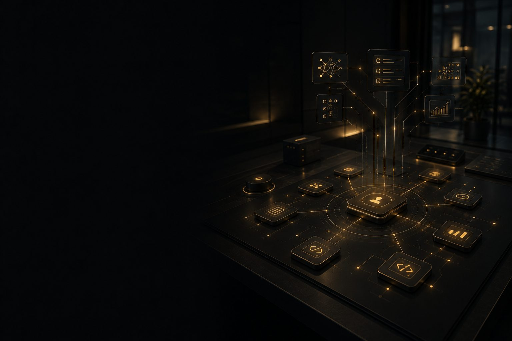
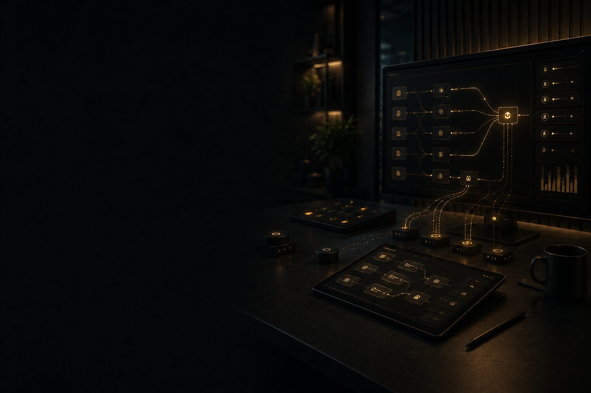
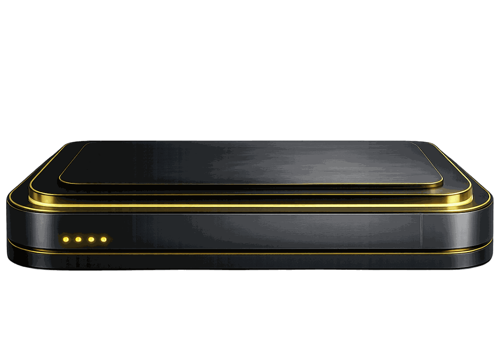
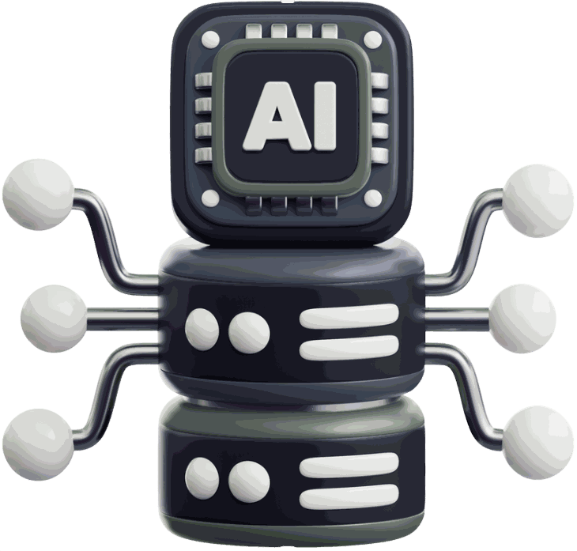
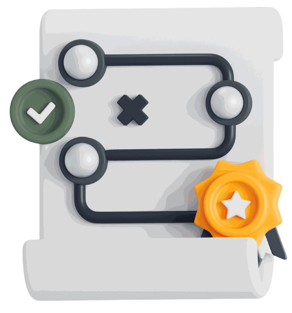
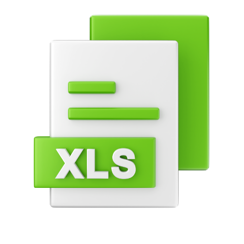

Prozess klären
Welcher Geschäftsprozess verbessert werden soll und welches konkrete Ergebnis durch KI entstehen muss.

INDIVIDUELLE KI-SYSTEME
Von der Potenzialanalyse über Prompt Engineering und MCP bis zur Umsetzung maßgeschneiderter KI-Lösungen.
Warum Nurovelle
KI schafft nur dann echten Nutzen, wenn sie zu den bestehenden
Prozessen,
Daten und Systemen eines Unternehmens passt.
Deshalb beginnt Nurovelle nicht mit einem fertigen Tool, sondern mit der Frage, welcher Ablauf verbessert werden soll und welche technische Lösung dafür tatsächlich sinnvoll ist.
Projektstart
Ob erste Orientierung oder konkrete Projektidee.
Wir prüfen Prozesse, Daten und technische Voraussetzungen und zeigen den passenden nächsten Schritt.
Welcher Geschäftsprozess verbessert werden soll und welches konkrete Ergebnis durch KI entstehen muss.
Welche Daten, Systeme und Wissensquellen bereits vorhanden sind und technisch nutzbar gemacht werden können.
Ob ein KI-Agent, ein Wissenssystem, Automatisierung oder individuelle Software der sinnvolle nächste Schritt ist.
Von der Idee zum Projekt
Erst prüfen, dann entwickeln.
Wir prüfen Machbarkeit, Datenlage und Integrationsaufwand, bevor unnötige Entwicklungs- oder Folgekosten entstehen.

Bestehende Datenquellen werden verbunden und so aufbereitet, dass Teams Trends, Engpässe und nächste Schritte klarer erkennen.
Manuelle Arbeitsschritte werden analysiert, priorisiert und in automatisierte Workflows oder KI-Agenten überführt.
Ein KI-System erschließt vorhandene Dokumente, Projektdaten und interne Informationen, damit Mitarbeitende schneller belastbare Antworten finden.
KI-LEISTUNGEN VON NUROVELLE
Elf Leistungsbereiche, ein durchgehender Ablauf.
Von KI-Agenten und Prozessautomatisierung bis zu Daten-, Wissens- und SEO-Systemen: Wählen Sie den passenden Leistungsbereich für weitere Details.
Chancen erkennen und priorisieren
Von der Idee zum belastbaren Plan

Digitale Systeme mit klaren Aufgaben
Dialogsysteme für Service und Wissen
Natürliche Interaktion per Sprache
Präzise Anweisungen für bessere Ergebnisse
Kontrollierter und nachvollziehbarer Einsatz
Prozesse verbinden und entlasten

Informationen erfassen und prüfen
Maßgeschneiderte Systeme statt Insellösungen
Strukturierte Grundlagen für organische Reichweite
Kompetenzen
Von der Idee bis zum produktiven KI-System — der gesamte Weg aus einer Hand.
Schwerpunkte, die in realen Projekten immer wieder gefragt sind — von Prompt Engineering und Agenten bis zu Datenanbindung und individueller Software.
KI-Potenzialanalyse
Ein strukturierter Einstieg statt Verkaufsformular.
Die Potenzialanalyse ist kein Verkaufsformular, sondern ein strukturierter Einstieg. Sie zeigt, welche Abläufe aktuell Zeit binden, wo Medienbrüche entstehen und welche Datenquellen bereits vorhanden sind.
Was geprüft wird
Eine klare erste Einschätzung, ob und wo sich KI-Automatisierung lohnt — mit einer Einordnung von Aufwand, Nutzen und Priorität sowie einer Empfehlung für den sinnvollsten nächsten Schritt.
Kostenlos und unverbindlich. Kein Abo. Keine versteckten Kosten.
Grobe Modellrechnung — die echte Analyse betrachtet Ihre Prozesse konkret.
Richtwert auf Basis Ihrer Angaben — kein verbindliches Angebot.
ABLAUF
Sechs Schritte von der Aufgabe bis zum laufenden System.
Von der Prozessaufnahme bis zur Umsetzung schafft jeder Schritt Klarheit über Nutzen, Daten, Schnittstellen und technische Machbarkeit.



Kontakt
Direkter Draht statt Formularschleife.
Ob erste Orientierung oder konkrete Projektidee: In einem unverbindlichen Gespräch klären wir, worum es geht, welche Voraussetzungen bereits vorhanden sind und welcher nächste Schritt sinnvoll ist.
Nurovelle
Sie möchten einen Prozess prüfen, eine konkrete KI-Idee einordnen oder herausfinden, welche Lösung zu Ihrer Ausgangslage passt?
Wir besprechen den aktuellen Stand, die wichtigsten Anforderungen und mögliche nächste Schritte – klar, strukturiert und ohne Verkaufsdruck.
Vier Dokumente zum Mitnehmen.
Praxisnahe Guides, Checklisten und Vorlagen unterstützen Sie bei der Bewertung und Umsetzung von KI- und Automatisierungspotenzialen.
Ausgangslage, Lösungsweg und Ergebnisse eines KI-Projekts.

Excel-Vorlage zur Bewertung von Aufwand, Nutzen und ROI.
Praxistaugliche Prompts für präzisere KI-Ergebnisse.
Prüfpunkte für geeignete Prozesse und Automatisierungen.
HÄUFIGE FRAGEN
Was Kunden vor dem ersten Projekt wissen wollen.
Die wichtigsten Fragen zur Potenzialanalyse, Umsetzung und zum Umgang mit Daten.
Nein. Die Potenzialanalyse eignet sich auch dann, wenn zunächst nur ein zeitaufwendiger oder fehleranfälliger Prozess bekannt ist. Gemeinsam wird geprüft, ob KI, Automatisierung, Software oder eine andere Prozessverbesserung sinnvoll ist.
Geprüft werden der aktuelle Ablauf, beteiligte Systeme und Datenquellen, manuelle Übergaben, wiederkehrende Aufgaben sowie der mögliche Nutzen einer technischen Lösung. Daraus entsteht eine erste Einordnung von Aufwand, Priorität und sinnvollem nächsten Schritt.
Das Angebot richtet sich an Unternehmen, die wiederkehrende Abläufe verbessern, Informationen schneller nutzbar machen oder bestehende Systeme sinnvoll verbinden möchten. Entscheidend ist nicht die Unternehmensgröße, sondern ein klar abgrenzbarer Prozess oder konkreter Verbesserungsbedarf.
Ja. Lösungen werden an den jeweiligen Prozess, die vorhandenen Systeme und die technischen Anforderungen angepasst. Dazu können KI-Agenten, Automatisierungen, Wissenssysteme, Schnittstellen oder individuelle Software gehören.
Grundsätzlich ja, sofern geeignete Schnittstellen, Datenzugriffe oder technische Integrationsmöglichkeiten vorhanden sind. Vor der Umsetzung wird geprüft, welche Systeme beteiligt sind und welche Anbindung realistisch und sicher möglich ist.
Zu Beginn werden Aufgabe, Ziel, Datenlage und bestehende Abläufe geklärt. Danach folgen technische Prüfung, Auswahl des passenden Lösungstyps, Umsetzungsplanung, Entwicklung, Tests und die kontrollierte Einführung in den bestehenden Prozess.
Das hängt vom Umfang, der Datenlage, den beteiligten Systemen und dem Integrationsaufwand ab. Eine klar abgegrenzte Automatisierung kann deutlich schneller umgesetzt werden als ein komplexes System mit mehreren Schnittstellen und Freigabeprozessen.
Die Angaben werden geprüft und strukturiert eingeordnet. Anschließend erhalten Sie eine erste Rückmeldung zum möglichen Einsatzbereich, zu offenen Voraussetzungen und zum sinnvollsten nächsten Schritt. Falls weitere Informationen erforderlich sind, werden diese gezielt abgefragt.